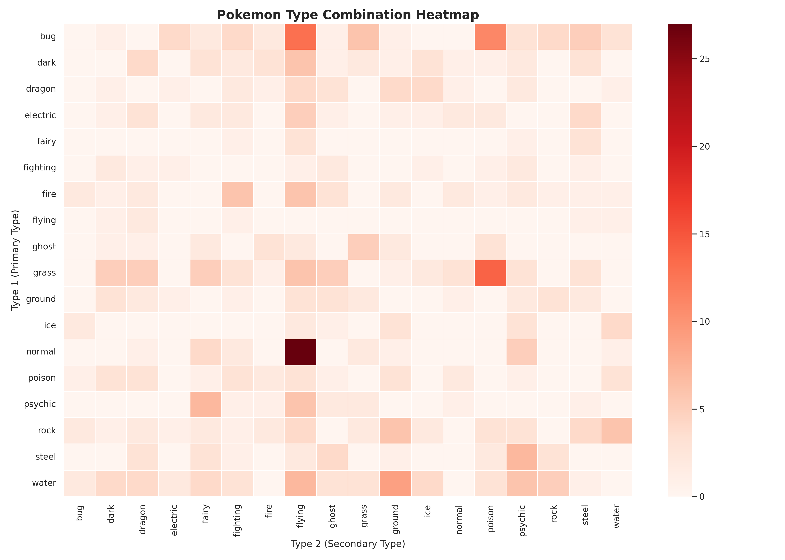
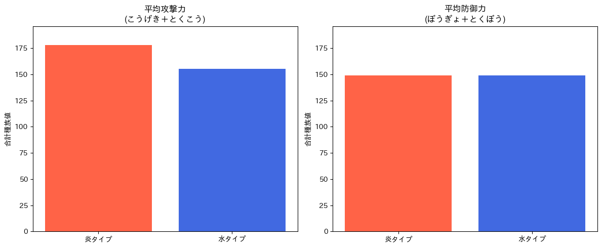
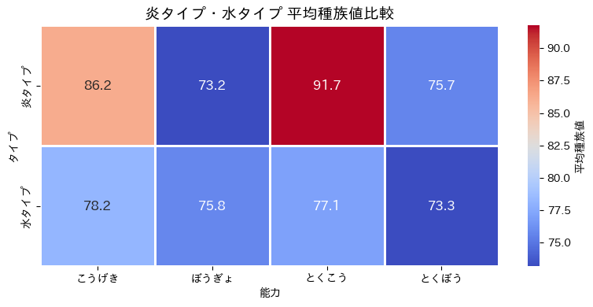
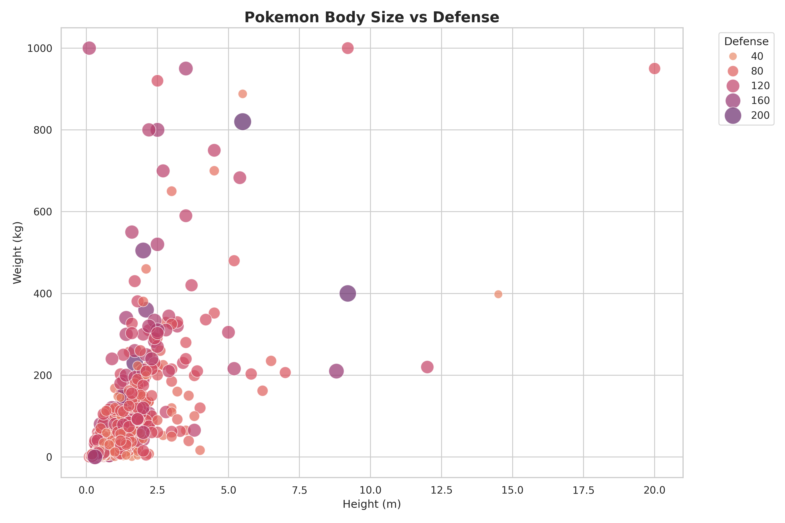
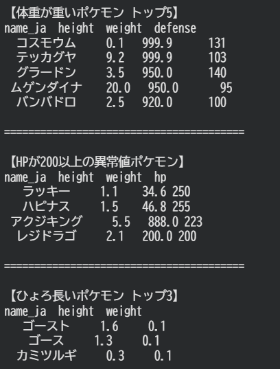
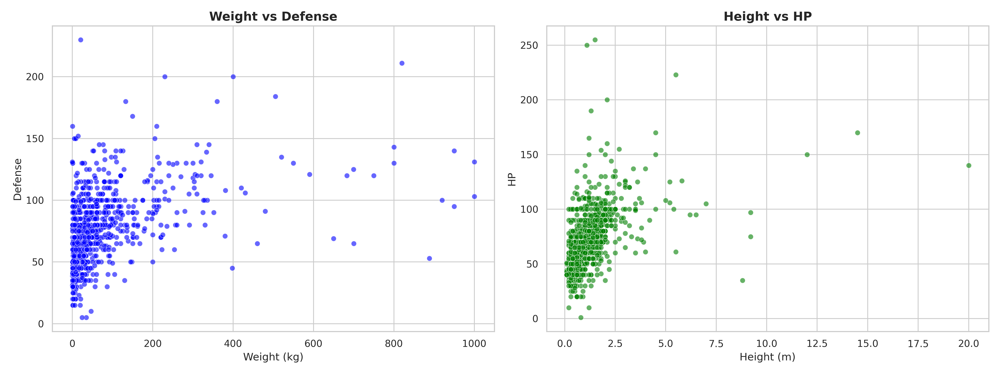

タイプ分布
どのタイプに何匹のポケモンが該当しているかを、ヒートマップで確認します。
PokéAPIから取得したデータを使い、タイプの分布、炎タイプと水タイプの能力差、 体重・身長と防御力の関係をグラフで整理しました。

使用データはPokéAPIです。ポケモンのタイプ、攻撃力、防御力、 体重、身長などの項目を調査に使用しました。

どのタイプに何匹のポケモンが該当しているかを、ヒートマップで確認します。
炎タイプと水タイプに絞り、攻撃力と防御力の差をグラフで見比べます。
体重・身長の大きいポケモンを見ながら、防御力との関係を調べます。
タイプごとの該当数をヒートマップで表示し、数が多いタイプ・少ないタイプを見つけやすくします。
ヒートマップを見ると、水タイプと飛行タイプを持つポケモンが多いことが分かる。 どちらもゲームの進行や世界観に関わりやすく、ポケモンのデザインにも使いやすいタイプだと考えられる。
一方で、フェアリータイプ・ドラゴンタイプ・氷タイプは、該当するポケモンが少ない。 これらは使われる場面やイメージが限られやすいタイプだと考えられる。
以上のことから、タイプごとの数の違いには、ゲーム進行での役割、タイプの特別感、 追加された時期、出現場所やデザインの作りやすさが関係していると考えられる。
炎タイプと水タイプを比較し、攻撃力・防御力にどのような差があるかを確認します。


体重・身長の大きいポケモンをピックアップし、体格と防御力の関係を複数の図で確認します。


